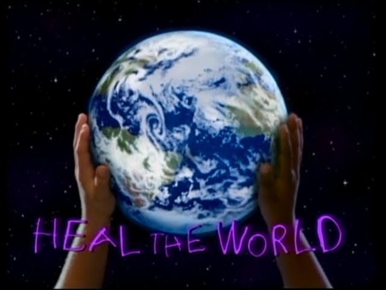

Día Internacional de la Madre Tierra 22 de abril

- 
Realizado por:
Ian Pablo Rojas Hernández Lima
4° "G"
Especialidad:
Programación
Submódulo:
Desarrolla Aplicaciones Móviles
Docente:
Lic. José Antonio Gómez Hernández
4° "G"
Programación
Desarrolla Aplicaciones Móviles
Lic. José Antonio Gómez Hernández
Celebramos el Día Internacional de la Madre Tierra para recordar que el planeta y sus ecosistemas nos dan la vida y el sustento. Con este día asumimos además, la responsabilidad colectiva, como nos recordaba la Declaración de Rio de 1992, de fomentar esta armonía con la naturaleza y la Madre Tierra
Este día nos brinda tambien la oportunidad de concienciar a todos los habitantes del planeta acerca de los problemas que afectan a la Tierra y a las diferentes formas de vida que en él se desarrollan.
En 1969, Nelson tuvo la idea de organizar una protesta en favor del medio ambiente tomando como modelo las manifestaciones en contra de la guerra de Vietnam. Nelson reclutó al activista Denis Hayes para organizar aquel primer 22 de abril en 1970. Hoy en día se reconoce a Hayer como el precursor del movimiento ecologista moderno. La Agencia de Protección Medioambiental de EE.UU nació a finales de 1970, y desde entonces los esfuerzos para mejorar la calidad del aire y el agua fueron ganando terreno en el ámbito político.
"Madre Tierra" es una expresión común utilizada para referirse al Planeta Tierra en diversos países y regiones, lo que demuestra la interdependencia existente entre los seres humanos, las demás especies vivas y el planeta que todos habitamos. La Tierra y sus ecosistemas son nuestro hogar. Para alcanzar un justo equilibrio entre las necesidades económicas, sociales y ambientales de las generaciones presentes y futuras, es necesario promover la armonía con la naturaleza y el planeta.

El 23 de abril de 2018 se realizó en la sede de las Naciones Unidas en Nueva York, el 8° Diálogo Interactivo sobre Armonía con la Naturaleza, en ocasión de la conmemoración del Día Internacional de la Madre Tierra. El Diálogo se realizó con el objetivo de inspirar a los ciudadanos y las sociedades a reconsiderar la relación que mantienen con la naturaleza, acorde a la meta 12.8 de los Objetivos de Desarrollo Sostenible con respecto a los patrones de consumo y producción sostenibles.
Para que un gobierno y las personas se beneficien de manera sostenible de tales ofertas, todas las partes interesadas deben participar desde el principio. Eso significa que el gobierno nacional, el gobierno local, los pequeños agricultores y otros pueblos marginados, terratenientes, grupos de conservación de la vida silvestre, etc. deben estar en la mesa cuando se tomen decisiones.